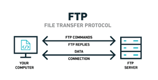

File transfer protocol (FTP) is an Internet tool provided by TCP/IP. It helps to transfer files from one computer to another by providing access to directories or folders on remote computers and allows software, data and text files to be transferred between different kinds of computers.
1. It encourages the direct use of remote computers.
2. It shields users from system variations (operating system, directory structures, file structures). 3. It promotes the sharing of files and other types of data.FTP is built on a client–server model architecture using separate control and data connections between the client and the server. FTP may run in active or passive mode, which determines how the data connection is established. (This sense of "mode" is different from that of the MODE command in the FTP protocol.) In active mode, the client starts listening for incoming data connections from the server on port M. It sends the FTP command PORT M to inform the server on which port it is listening. The server then initiates a data channel to the client from its port 20, the FTP server data port.
In situations where the client is behind a firewall and unable to accept incoming TCP connections, passive mode may be used. In this mode, the client uses the control connection to send a PASV command to the server and then receives a server IP address and server port number from the server, which the client then uses to open a data connection from an arbitrary client port to the server IP address and server port number received
